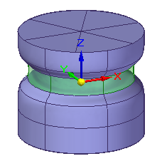
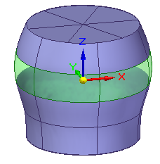
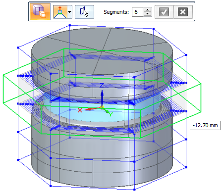
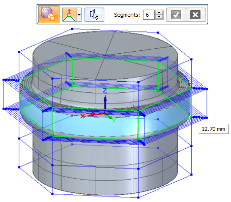
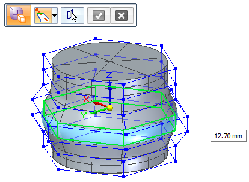

Offset cage faces
Use the Offset command to move or lift selected cage faces by a specified value. The faces are offset along their normal direction, and extended or trimmed to close the cage.
Green=Faces selected to offset.
|
Offset faces with the Lift option |
Offset faces with the Tip option |
|
 |
 |
-
In the Subdivision Modeling environment, select the Home tab→Modify group→Offset command .
-
Select one or more cage faces to offset. Input faces can be planar, non-planar, and have any number of sides. You can select faces on two different cage bodies in the document.
Press Shift as you select to add or remove elements from the select set. Click Accept, right-click, or press Enter to continue.
-
On the command bar, choose the Tip or Lift option to control how the cage faces are offset.
-
Lift—Adds faces to the model, leaving neighboring faces in their current positions and orientations as you lift the selected elements.
-
Tip—Trims, extends, or changes the current orientation of faces connected to the selected elements in the select set. No new faces are created.
-
-
Do one of the following:
-
If you selected the Lift option, then:
-
Enter the number of faces to create in the Segments box. The default number of segments is 1.
-
Click Accept to continue.
-
In the edit box adjacent to the selected faces, type a positive or negative offset distance value.
The default offset value is 0.25 inches or 0.005 mm.
Example:Compare the results of faces lifted using a negative offset distance,

with faces lifted using a positive offset distance.

-
Right-click or press Enter to finish offsetting the selected faces.
-
-
If you selected the Tip option:
-
On the command bar, click Accept to continue.
-
Type an offset value and direction in the edit box, or use the mouse scroll wheel to dynamically change the values.

-
Right-click or press Enter to finish offsetting the selected faces.
-
-
-
The Offset command resets when the Select Faces step is available on the command bar. You can select more faces to offset, or press Esc to end the command.
How do I
Subdivision Modeling workflowMove cage elements
Move using Quick Move
Use symmetric mode in Subdivision Modeling
Scale a subdivision model
Split subdivision model faces
Split faces with offset
Connect cage faces or edges with a bridge
Delete and fill cage faces
Align a shape to a curve
Learn more
Introduction to Subdivision ModelingUsing PathFinder with subdivision models
Working with cage elements
Creating subdivision features
Working with subdivision features
Moving and rotating cage elements
Look up more details
Subdivision Modeling commandBox command in Subdivision Modeling
Box command bar
Cylinder command in Subdivision Modeling
Cylinder command bar
Sphere command in Subdivision Modeling
Sphere command bar
Torus command
Torus command bar
Scale command in Subdivision Modeling
Blend command
Show Blend Values command
Split command
Split with Offset command
Bridge command
Align to Curve command
Cage Style command